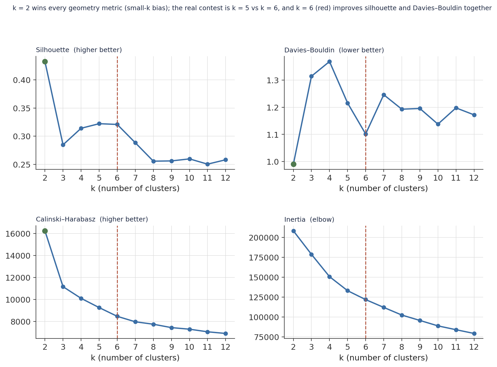
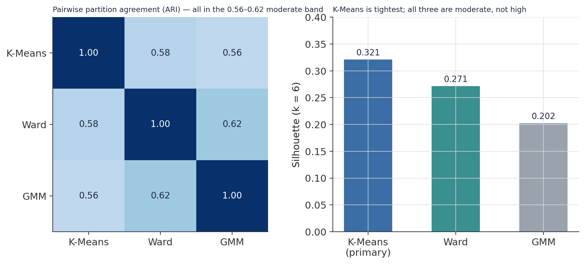
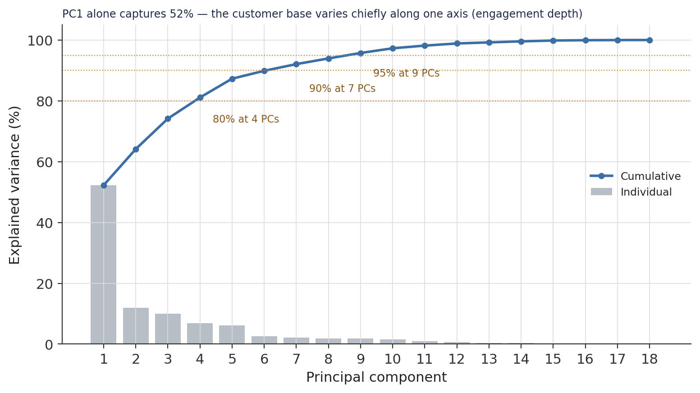
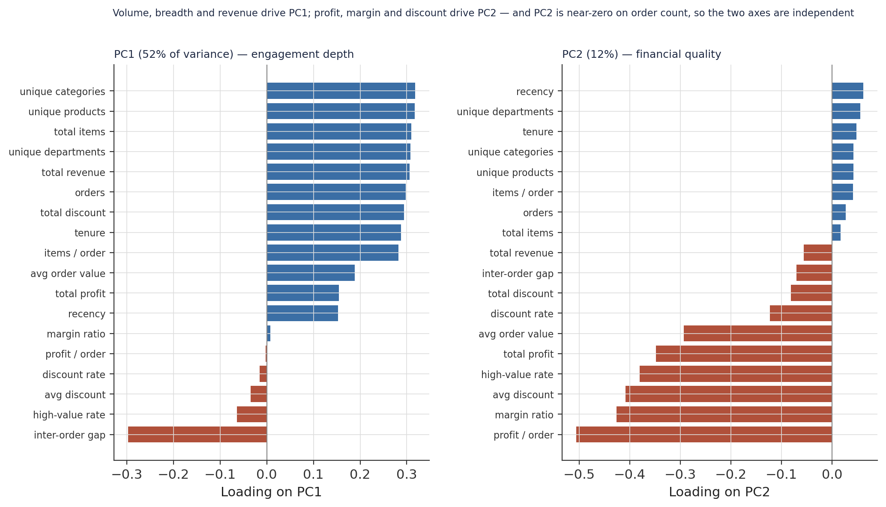
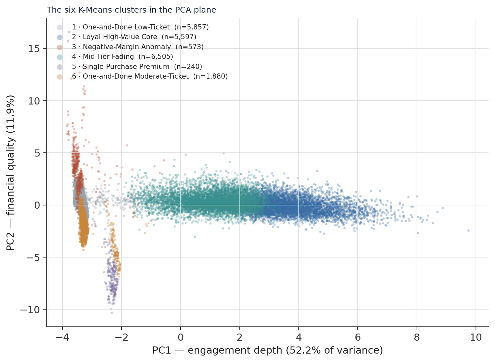
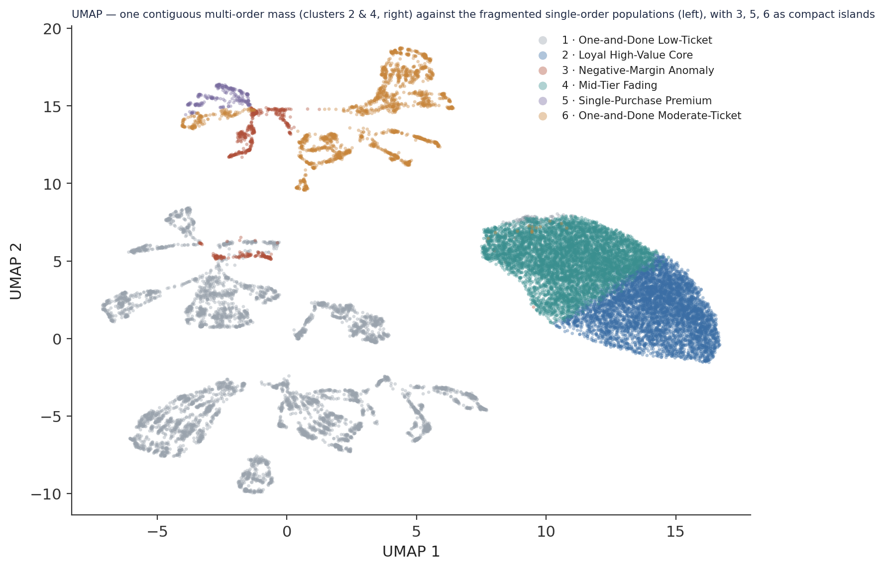
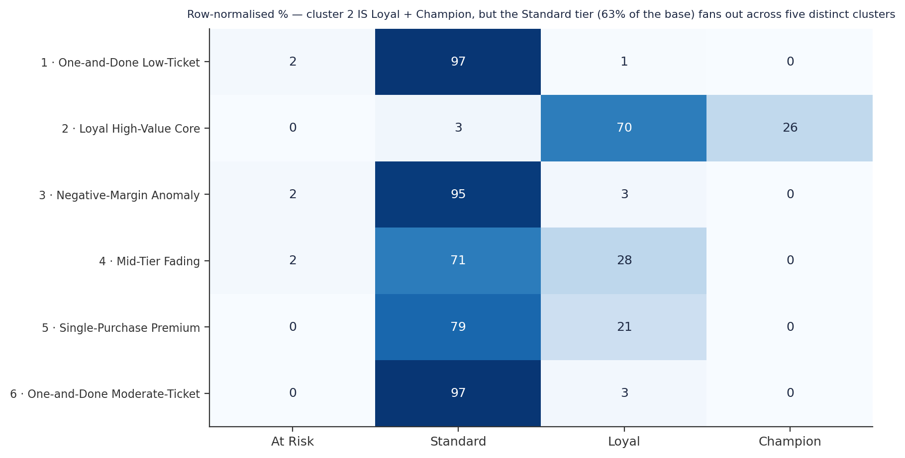
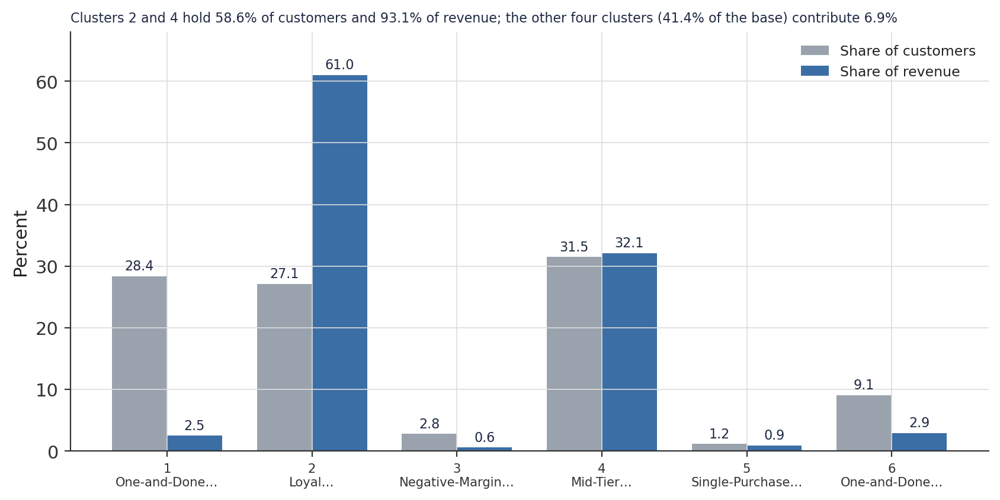

A Six-Cluster Refinement of the Loyalty Tier System: Multi-Metric Selection and Three-Algorithm Validation Over 20,652 Customers
An unsupervised segmentation of an e-commerce customer base — how a data-driven partition consolidates the top two RFM tiers into one group and splits the Standard tier into five, and how far to trust it.
Unsupervised K-Means clustering of 20,652 customers on 18 behavioural, monetary, temporal, and product-breadth features. k = 6, chosen where silhouette and Davies–Bouldin improve together (k = 2 wins every geometry metric but is a small-k bias artefact). Cross-validated: K-Means, Ward, and a Gaussian mixture agree at ARI 0.56–0.62 — moderate, so the partition is partly algorithm-dependent. The refinement: one cluster is 70% Loyal-tier and 26% Champion-tier customers — it holds 99% of all Champions and two-thirds of the Loyal tier, consolidating the RFM top two — while the Standard tier (63% of the base) fans out across five structurally distinct clusters, including a 573-customer negative-margin group the algorithm surfaced with no guidance toward profitability. The economics: two clusters hold 58.6% of customers and 93.1% of revenue. Silhouette 0.32 — a useful lens, not a ground truth.
unsupervised learning, K-means clustering, Ward agglomerative clustering, Gaussian mixture model, silhouette score, Davies-Bouldin index, adjusted Rand index, k selection, PCA, UMAP, RFM, customer segmentation, Python, scikit-learn
Abstract
This study applies unsupervised clustering to a 20,652-customer e-commerce base to test whether it contains structurally distinct subpopulations that the existing four-tier RFM loyalty classification (At Risk / Standard / Loyal / Champion) does not capture. The analytical table is the validated Gold layer of a companion medallion pipeline; the clustering was fitted once and persisted, and every figure here is rebuilt from those artefacts. Eighteen behavioural, monetary, temporal, and product-breadth features were standardised and passed to K-Means. A sweep across k = 2–12 with four independent metrics identified k = 6 as the smallest non-trivial partition where silhouette and the Davies–Bouldin index improve together (k = 2 wins every geometry metric by the small-k bias all of them share). K-Means, Ward agglomerative clustering, and a Gaussian mixture model fitted at k = 6 agree at adjusted Rand index 0.56–0.62 — moderate, so the partition is partly algorithm-dependent. The six clusters refine rather than overturn the tier system: cluster 2 is 70.2% Loyal-tier and 26.4% Champion-tier customers — it captures 99.4% of all Champions and 66.8% of the Loyal tier (cluster 4 holds most of the remaining Loyal) — consolidating the RFM top two into one data-driven group that holds 27.1% of customers and 61.0% of revenue; the Standard tier (63% of the base) fans out across the other five clusters, which differ in ticket size, margin, and product category. Among them the algorithm surfaced a 573-customer negative-margin group (mean margin ratio −1.27, mean profit −$375 per order) with no feature pointing it toward profitability. Customer segment (Consumer / Corporate / Home Office) and late-delivery rate are near-uniform across all six clusters, confirming two prior null findings in an independent frame. Silhouette is 0.32 — moderate; the partition is a lens, not a ground truth.
Keywords: unsupervised learning, K-means clustering, silhouette, Davies–Bouldin, adjusted Rand index, PCA, UMAP, RFM, customer segmentation
Introduction
The companion customer study profiled this base at the individual level and along a four-tier RFM loyalty ladder. That ladder is useful, but it is a fixed-threshold system: it assigns roughly 63% of customers to the single “Standard” band. If materially different customer types sit inside Standard — different ticket sizes, margin profiles, product preferences — a threshold system cannot surface them.
This study asks whether the base contains such structure, using unsupervised clustering: no labels are supplied, and the algorithm groups customers from the geometry of an 18-dimensional feature space. The result is evaluated three ways — by internal geometry metrics, by agreement across three structurally different algorithms, and by whether the clusters separate on variables the algorithm never saw (loyalty tier, RFM score, customer segment, product category). If clusters split on inputs they were never given, the partition has found real structure rather than echoing itself.
The framing is deliberately modest. Clustering does not produce a ground truth; it produces one lens. The value test is whether that lens shows something the existing tier system cannot.
Method
Data source
One analytical table, customer_features_gold (20,652 rows × 39 columns), one row per customer aggregated over January 2015 – January 2018. No duplicate customers, no zero-variance columns.
Feature matrix
All 39 source columns were triaged: 18 enter the feature matrix, 21 are excluded with a stated reason (Table 1). Included features span four dimensions — behavioural (orders, total_items, avg_items_per_order), monetary (total_revenue, avg_order_value, total_profit, avg_profit_per_order, avg_margin_ratio, total_discount, avg_discount, discount_rate, high_value_order_rate), temporal (recency_days, customer_lifetime_days, avg_inter_order_days), and product breadth (n_unique_products, n_unique_categories, n_unique_departments).
Table 1
Feature-Matrix Triage (39 columns → 18 included, 21 excluded)
| Excluded group | Columns | Reason |
|---|---|---|
| Derived RFM labels | loyalty_tier, rfm_score, r_score, f_score, m_score, is_high_value_customer, orders_bucket |
Computed from features already in the matrix; including them lets the algorithm reconstruct a label instead of discovering structure. Used post-hoc. |
| Categorical preferences | preferred_category (44 levels), preferred_department, preferred_ship_mode |
Encoding a 44-level categorical would dominate distance without proportionate signal. Profiled post-hoc. |
| Shipping metrics | late_rate, early_rate, avg_shipping_days, avg_shipping_delay, total_late_orders |
Prior EDA established these are near-uniform across every tier and segment — distance without discrimination. |
| Collinear revenue | avg_revenue |
Correlates 0.62 with total_revenue and avg_order_value; a third revenue-derived measure over-weights the revenue dimension. |
| Artefact-laden | clv_proxy |
Extreme annualisation artefacts (short-tenure customers) would distort distances. |
| Structural | customer_id, first_order, last_order |
Identifier / datetime — temporal signal already captured by recency_days and customer_lifetime_days. |
| Non-discriminating | customer_segment |
Near-zero discriminating power per prior EDA. Used post-hoc. |
Note. avg_inter_order_days is 40.8% missing (single-order customers have no interval); imputed with a sentinel of 886 — one day above the observed maximum — to place “never returned” at maximum distance from repeat buyers in that dimension.
Preprocessing
Features were standardised with StandardScaler (zero mean, unit variance). This is a decision, not a default: total_revenue spans a range of $9,428 and discount_rate spans 0.33 — a scale ratio of ~28,000×. A two-feature K-Means (total_revenue, discount_rate) fitted unscaled versus scaled produces partitions that agree at only ARI 0.33, so scaling changes the result substantially rather than relabelling it.
k selection
K-Means was fitted for k = 2 through 12 (each model persisted), and four metrics computed per k: silhouette (cohesion vs. separation), Davies–Bouldin (within- vs. between-cluster scatter), Calinski–Harabasz (between- vs. within-cluster dispersion), and inertia (the elbow). Each geometry metric was ranked honestly across k (Figure 1, Table 2).
Algorithms and validation
Three structurally different algorithms were fitted at k = 6 — K-Means (centroid, spherical assumption), Ward agglomerative (hierarchical, minimum-variance merges), and a Gaussian mixture model (probabilistic, full covariance, soft assignment). Partition robustness was measured by pairwise adjusted Rand index; the primary algorithm was chosen by highest silhouette. Structure was then decomposed with PCA (linear, interpretable loadings) and UMAP (nonlinear, local-neighbourhood topology). random_state = 42 throughout.
Software
Python 3.10 with scikit-learn (K-Means, AgglomerativeClustering, GaussianMixture, PCA, the four metrics), umap-learn, pandas, numpy, and matplotlib.
Results
k = 6, chosen on a two-metric convergence
The sweep has a clear trap and a clear answer (Figure 1, Table 2). k = 2 wins outright — first on silhouette (0.43), Davies–Bouldin (0.99), and Calinski–Harabasz (16,231) — but this is the small-k bias all three metrics share: a binary split maximises between-cluster separation by construction, and a two-segment base has no operational content the tier system doesn’t already carry. Setting k = 2 aside, the contest is k = 5 versus k = 6. k = 5 edges silhouette by 0.001 (negligible); k = 6 wins Davies–Bouldin decisively — 1.10 versus 1.21 — and the inertia elbow bends through the k = 5–6 range. k = 6 is the smallest non-trivial partition where two metrics improve together, and six segments are operationally legible. k = 6 is locked.
Figure 1
k-Selection Sweep: Four Metrics Across k = 2–12

Note. Green dot = each metric’s optimum (all at k = 2, the bias). Red line = the chosen k = 6.
Table 2
Sweep Metrics for the Leading Candidates
| k | Silhouette | Davies–Bouldin | Calinski–Harabasz | Inertia | Verdict |
|---|---|---|---|---|---|
| 2 | 0.433 | 0.991 | 16,231 | 208,137 | wins all — small-k bias, no operational content |
| 5 | 0.322 | 1.215 | 9,258 | 133,067 | silhouette by 0.001; DB weak |
| 6 | 0.321 | 1.102 | 8,465 | 121,881 | DB + silhouette improve together; elbow region |
| 7 | 0.288 | 1.246 | 7,969 | 112,108 | both metrics worsen |
Note. Silhouette recomputed on a 15,000-row sample (random_state = 42); DB, CH, inertia on the full 20,652.
The partition is moderately robust across algorithms
K-Means, Ward, and the Gaussian mixture see broadly the same structure but disagree on boundaries (Figure 2). Pairwise adjusted Rand indices are K-Means↔︎Ward 0.58, K-Means↔︎GMM 0.56, Ward↔︎GMM 0.62 — all in the moderate band. K-Means is the tightest (silhouette 0.32 vs. Ward 0.27, GMM 0.20) and is the primary algorithm. The GMM soft-assignment check is reassuring: no customer falls below 0.50 posterior probability for its cluster, only 2.1% below 0.70, and 88.0% sit at or above 0.99 — effectively hard assignment, meaning the six clusters correspond to genuine density separations rather than arbitrary cuts through diffuse space. But the ARI band is the honest headline: this is a partly algorithm-dependent partition, and the profiling should be read with that caveat.
Figure 2
Cross-Algorithm Agreement and Per-Algorithm Silhouette (k = 6)

Note. ARI of 1.0 on the diagonal; the off-diagonal 0.56–0.62 is moderate agreement.
The feature space has one dominant axis
PCA on the 18 standardised features shows PC1 alone captures 52.2% of total variance, PC2 adds 11.9%, PC3 10.0%; the space reaches 80% variance at 4 components and 95% at 9 (Figure 3). PC1 is an engagement-depth axis (Figure 4) — its five heaviest loadings are n_unique_categories (0.32), n_unique_products (0.32), total_items (0.31), n_unique_departments (0.31), and total_revenue (0.31); volume, breadth, and revenue load together because they are structurally correlated, and the negative loading on avg_inter_order_days (−0.30) fixes the polarity (engaged at the positive end, non-returning at the negative). PC2 is a financial-quality axis — avg_profit_per_order (−0.51), avg_margin_ratio (−0.43), avg_discount (−0.41), high_value_order_rate (−0.38) — and it loads near-zero on orders (0.03), so engagement depth and financial quality are independent axes: a customer can be high-frequency and low-margin, or the reverse.
Figure 3
PCA Explained Variance

Note. The steep first bar is the signature of a feature space dominated by one axis of covariation.
Figure 4
PC1 and PC2 Feature Loadings

Note. PC2’s near-zero loading on orders is the evidence that the two axes are independent.
The six clusters
The K-Means partition splits the 20,652 customers into six clusters of sharply different character (Figure 5, Figure 6, Table 3). Three are single-order populations (mean orders 1.0, product breadth ≈ 1) that differ only in ticket and margin: cluster 1 (low-ticket, $139 AOV, positive margin), cluster 6 (moderate-ticket, $508 AOV), and cluster 3 — same one-order profile but a mean margin ratio of −1.27 and mean profit of −$375 per order. Cluster 5 is 240 customers who each made a single $1,271 purchase (100% high-value-order rate, 100% Computers). Cluster 2 is the high-engagement extreme: 6.3 orders, 43.8 items, 9.5 products, a 735-day lifetime, a 41-day inter-order gap. Cluster 4 is the middle: 3.3 orders, 6.0 products — but a mean recency of 391 days, the longest absence of any cluster.
Figure 5
The Six Clusters in the PCA Plane

Note. PC1 = engagement depth (52% of variance), PC2 = financial quality (12%). Cluster 3’s extreme negative margin projects it up the PC2 axis (sign convention inverted).
The nonlinear UMAP embedding (Figure 6) tells a consistent story with a sharper edge: the multi-order clusters 2 and 4 form one contiguous mass on the right — they are adjacent regions of a single density, not two islands — while the single-order populations (1, 3, 5, 6) break into many small fragments on the left. This is the visual form of the moderate silhouette: real structure, soft boundaries.
Figure 6
The Six Clusters in the UMAP Embedding

Note. UMAP preserves local neighbourhoods, not global distances; the gap between the left fragments and the right mass reflects the one-order versus multi-order divide.
Table 3
The Six Customer Clusters
| # | Name | Customers | % base | Mean orders | Mean AOV | Mean margin | Revenue | % revenue | Dominant tier | Top category |
|---|---|---|---|---|---|---|---|---|---|---|
| 1 | One-and-Done Low-Ticket | 5,857 | 28.4 | 1.0 | $139 | +0.21 | $0.83M | 2.5 | Standard (97%) | Video Games |
| 2 | Loyal High-Value Core | 5,597 | 27.1 | 6.3 | $582 | +0.14 | $20.2M | 61.0 | Loyal 70% / Champion 26% | Cleats |
| 3 | Negative-Margin Anomaly | 573 | 2.8 | 1.0 | $328 | −1.27 | $0.19M | 0.6 | Standard (95%) | Children’s Clothing |
| 4 | Mid-Tier Fading | 6,505 | 31.5 | 3.3 | $510 | +0.11 | $10.6M | 32.1 | Standard 71% / Loyal 28% | Cleats |
| 5 | Single-Purchase Premium | 240 | 1.2 | 1.0 | $1,271 | +0.26 | $0.31M | 0.9 | Standard (79%) | Computers (100%) |
| 6 | One-and-Done Moderate-Ticket | 1,880 | 9.1 | 1.0 | $508 | +0.24 | $0.96M | 2.9 | Standard (97%) | Cameras |
Note. Margin = mean avg_margin_ratio. Cluster 5’s clv_proxy is undefined (zero-day tenure); cluster 6’s averages $28,330, an annualisation artefact.
The loyalty-tier refinement
Cross-tabulating cluster against the RFM loyalty tier is the study’s central result (Figure 7). Cluster 2 is the Loyal + Champion tiers. Its own composition is 70.2% Loyal-tier and 26.4% Champion-tier customers (only 3.4% Standard); read the other way, it contains 99.4% of every Champion in the base and 66.8% of the Loyal tier, with cluster 4 holding a further 30.5% of Loyal. The tier system’s top two bands consolidate into one data-driven group. But the Standard tier does not survive as a unit: its 13,057 customers are split 43.7% into cluster 1, 35.2% into cluster 4, 14.0% into cluster 6, and 4.2% into the negative-margin cluster 3 — subpopulations that differ in ticket size, margin, product category, and financial outcome, which a four-level threshold system treats as one. This decomposition of Standard is what the clustering adds over the existing taxonomy.
Figure 7
Cluster Composition by RFM Loyalty Tier (row-normalised)

Note. Each row sums to 100%. Cluster 4 also carries 28% Loyal — it straddles the Standard/Loyal boundary.
Two null findings confirmed
Customer segment carries no structure. Consumer, Corporate, and Home Office proportions sit within ±3 points of each other across all six clusters — segment membership should never be a clustering input or a stratification variable. Late-delivery rate is systemic. Cluster mean late rates run from 0.533 to 0.567 — a 3.4-point spread around 0.54 — so the operational failure documented in the companion studies does not interact with customer type, and no customer-level segmentation can address it. Both were established in prior EDA; the clustering reproduces them in an independent frame (Figure 8 shows the economic weight of each cluster).
Figure 8
Population Share Versus Revenue Share by Cluster

Note. Clusters 2 and 4 — 58.6% of customers — generate 93.1% of revenue.
Discussion
Principal findings
Three results define the segmentation. First, k = 6 is defensible but not forced — it is the smallest partition where two internal metrics agree, chosen against a small-k bias that would otherwise select a useless binary split. Second, the partition refines the loyalty tiers, it does not overturn them: it consolidates the Loyal and Champion tiers into one financially dominant group (cluster 2: 27% of customers, 61% of revenue) and decomposes the Standard tier — 63% of the base — into five structurally distinct clusters. Third, the algorithm found a customer type without being told to: cluster 3, 573 customers whose single orders carry a mean margin ratio of −1.27 and a mean loss of −$375 per order. This is the customer-side reflection of the catalogue-level margin anomaly documented in the companion product study — a subset of orders priced below cost. Clustering surfaced these customers with no profitability feature steering it there; the negative-margin signal rode in on the general engagement geometry.
The mechanism worth naming
PC1 carries 52% of the variance and is almost entirely engagement depth — how many products, categories, and departments a customer touches. The customer base varies primarily along how deeply someone shops, not along what they spend per order, how they were served, or which segment they belong to. That is why the loyalty tiers (which are built from recency, frequency, and monetary rank) map cleanly onto the clustering at the top — cluster 2 is high on every PC1 feature — and why they fail in the middle: the Standard tier collects everyone who is not deeply engaged, and that is a heterogeneous group by definition. The clustering’s contribution is to give that group five names.
Limitations and honest assessment
Silhouette is 0.32 — moderate, not high. The clusters are not spherically separated in 18-dimensional space; they overlap at boundaries, particularly clusters 1↔︎6 (both single-order, differing in ticket) and 2↔︎4 (both multi-order, differing in recency). The ARI band of 0.56–0.62 confirms the partition is partly algorithm-dependent — the three algorithms see similar broad structure but disagree on which customers sit near the boundaries. The two micro-clusters (3 and 5, together 4% of the base) are small; they are density-genuine (GMM assigns them crisply) but any per-cluster statistic on 240 customers carries wide uncertainty. The sentinel imputation for avg_inter_order_days is a modelling choice that pushes the single-order population to one extreme of that dimension by construction. The partition is a lens, not a ground truth: downstream work should use it alongside the RFM tiers, not as a replacement.
Conclusion
The six-cluster segmentation earns its place by doing one thing the fixed-threshold loyalty system cannot: it disaggregates the Standard tier into low-ticket transient buyers, moderate- and premium-ticket single purchasers, a fading mid-tier, and a negative-margin group — while confirming that the Loyal and Champion tiers are a single coherent, revenue-dominant population. It also re-confirms, from an independent direction, that customer segment and delivery experience carry no customer-level structure. The persisted label table is available for downstream targeting and modelling.
References
Constante, F., Silva, F., & Pereira, A. (2019). DataCo smart supply chain for big data analysis (Version 5) [Data set]. Mendeley Data. https://doi.org/10.17632/8gx2fvg2k6.5
Caliński, T., & Harabasz, J. (1974). A dendrite method for cluster analysis. Communications in Statistics, 3(1), 1–27. https://doi.org/10.1080/03610927408827101
Davies, D. L., & Bouldin, D. W. (1979). A cluster separation measure. IEEE Transactions on Pattern Analysis and Machine Intelligence, PAMI-1(2), 224–227. https://doi.org/10.1109/TPAMI.1979.4766909
Hubert, L., & Arabie, P. (1985). Comparing partitions. Journal of Classification, 2(1), 193–218. https://doi.org/10.1007/BF01908075
McInnes, L., Healy, J., & Melville, J. (2018). UMAP: Uniform manifold approximation and projection for dimension reduction. arXiv:1802.03426. https://arxiv.org/abs/1802.03426
Pedregosa, F., Varoquaux, G., Gramfort, A., Michel, V., Thirion, B., Grisel, O., Blondel, M., Prettenhofer, P., Weiss, R., Dubourg, V., Vanderplas, J., Passos, A., Cournapeau, D., Brucher, M., Perrot, M., & Duchesnay, É. (2011). Scikit-learn: Machine learning in Python. Journal of Machine Learning Research, 12, 2825–2830.
Rousseeuw, P. J. (1987). Silhouettes: A graphical aid to the interpretation and validation of cluster analysis. Journal of Computational and Applied Mathematics, 20, 53–65. https://doi.org/10.1016/0377-0427(87)90125-7
Analysis and figures by the author. An unsupervised segmentation of one customer base; silhouette is 0.32 and the partition is one analytical lens, not a definitive taxonomy.